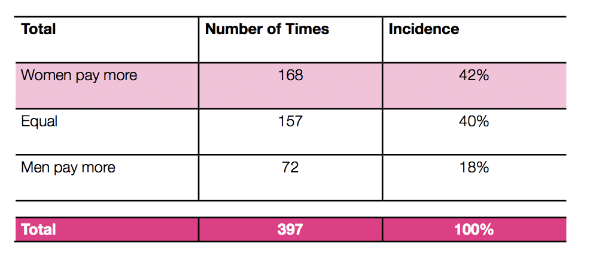
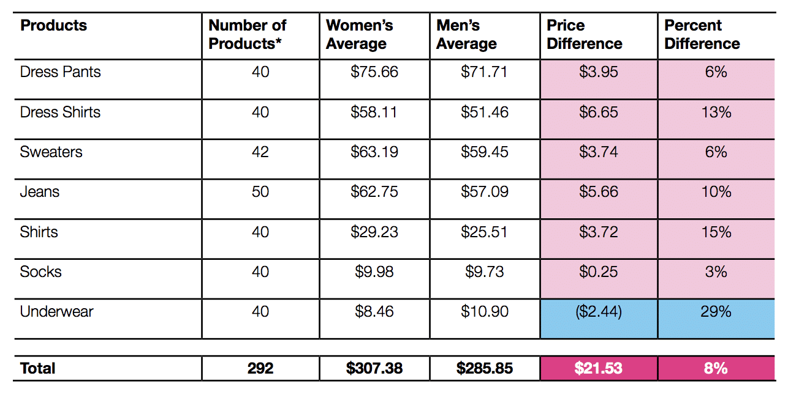
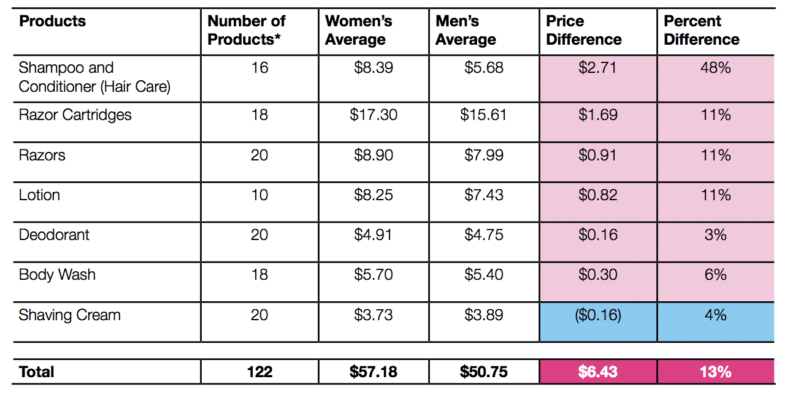
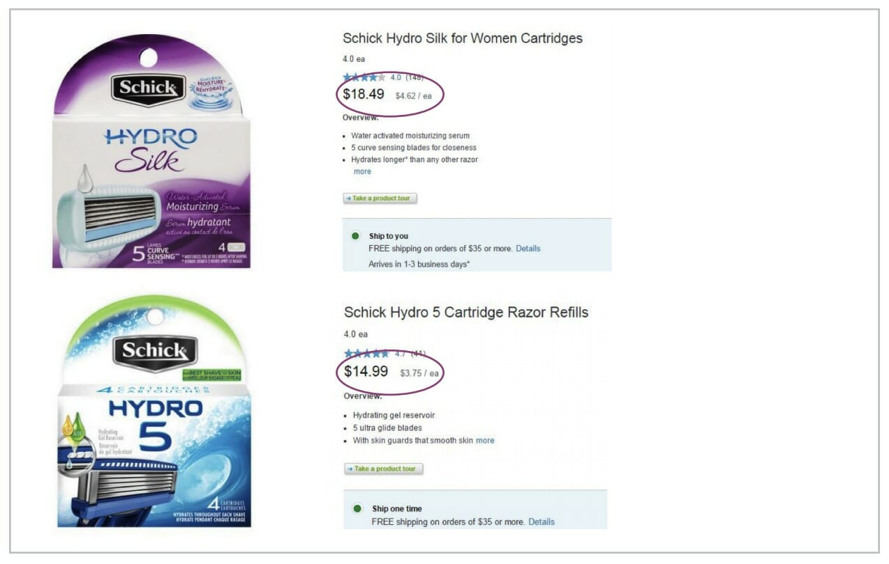
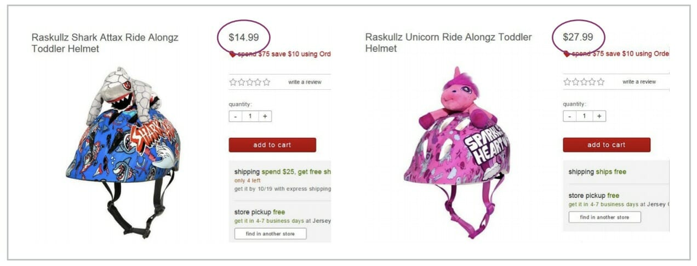

Some Statistics...
There has been a lot of research on the pink tax that found overall, women were paying more than men 42% of the time. How much more? About $1,300 more a year in extra costs. That’s $1,300 that can’t go into a women’s retirement fund.
The New York City Department of Consumer Affairs released a study comparing the prices of over 800 products. The goal of the study was to estimate the price differences male and female shoppers face when buying the same types of items.
The results: Products for women and girls cost 7% more than comparable products for men and boys.
👀7% more for toys and accessories
👀4% more for children’s clothing
👀8% more for adult clothing
👀13% more for personal care products
👀8% more for senior/home health care products
When has it been introduced...
Women being charged a higher price for things isn’t new. The sales tax system in the United States was created decades ago.
Politicians had to decide which products would be subject to a sales tax and which would be tax-free. But things have changed since these decisions came about, and tax policies have not changed to reflect the times.
Some things, like women’s clothing, have higher tariffs when imported from abroad than do men’s clothing.
Manufacturers of consumer goods like those razors claim that the cost of product design and marketing for women’s products cost more, and they pass those costs down to female consumers.
Clothes
The words “flattering and on-trend” aren’t exactly ones that spring to mind when I think of Old Navy. Cheaply made, and ready for the rag bag after a couple of washes are what I think.
Women’s clothing cost more than men’s in six of seven categories, except underwear, which cost an average of 29% more for men.
The clothing product category that had the most significant price difference by percent was women’s shirts, which cost 15% more on average than men’s shirts.
Dry Cleaning
Dry cleaners are another place women will pay more for the same service. Men’s shirts cost an average of $2.86 for dry cleaning and women’s cost $4.95. But a woman’s dress shirt doesn’t require any different dry cleaning technique than a man’s shirt.
Self Care Products
These are the kinds of things you buy in a drug store, razors, shaving cream, deodorant, face cleanser. These kinds of products are prime offenders when it comes to charging women more for the “pink” products.
Here’s what you can do ladies, just buy the men’s stuff!
Unless you purchase the fancy razors with multiple blades and “moisture strips,” the only difference between generic old stick razors for men and women is that our’s are pink, and their’s are blue.
Surprisingly, color has little effect on the hair removal process.
And buy a big old can of Barbasol. The stuff has been around since 1919 for a reason. Lasts forever, works great, and whatever you’re shaving won’t smell like the inside of a raspberry pop tart.
Women’s shaving creams have the nastiest, synthetic smells.
You’re not out of the drug store yet. If you have internal rather than external plumbing, you are going to spend about $3,000 throughout your life on pads or tampons.
Jessica Valenti wrote a piece in the Guardian last year wondering why these products weren’t free or at least not taxed.
The backlash was swift and vitriolic. You would have thought she had the nerve to say that insurance shouldn’t cover Viagra!
The tampon tax has its own niche in the gender tax world and for good reason.
While women can avoid paying the pink tax in some cases by choosing the male version of something, there is no option when it comes to menstrual products.
Toys
Unfortunately, the pink tax starts at birth. Across the six product categories of toys, the girls’ items were consistently more expensive than ones for boys.
The most significant price discrepancy was in helmets and knee/elbow pads.
The girls’ were priced a whopping 13% higher. If you buy things for children, you probably already know of the price disparity.
Some of these companies are taking the “pink” in pink tax very seriously. Similarly, a pink kid’s beginner bike from Target.com was $80, while the non-pink version was $64.
Boomerang Commerce did a study of 50 popular kids products at six online retailers, including Target, Amazon, Walmart, Macy’s, JCPenney, and Bloomingdales.
They analyzed items in a variety of colors, and every time, the pink-colored item was the most expensive. Pink items, compared to other colors, ranged from 2-15% more.